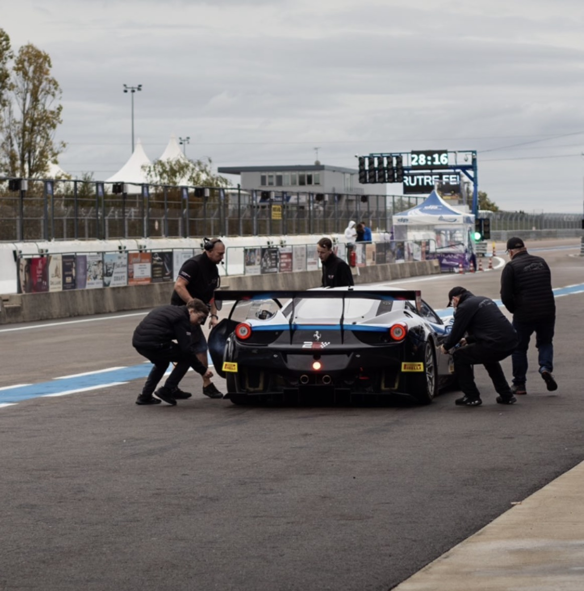
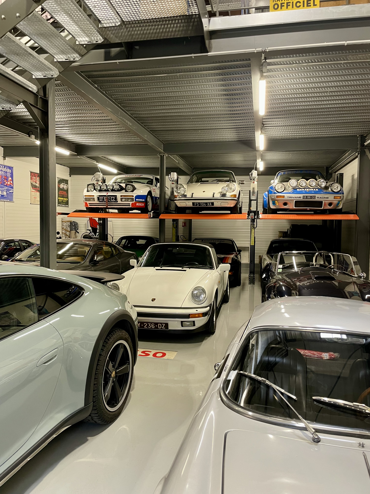
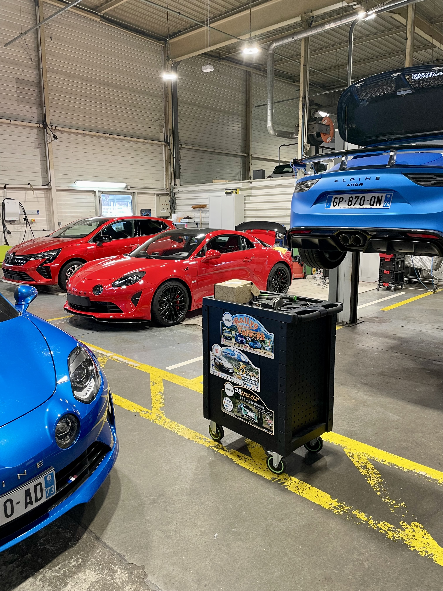
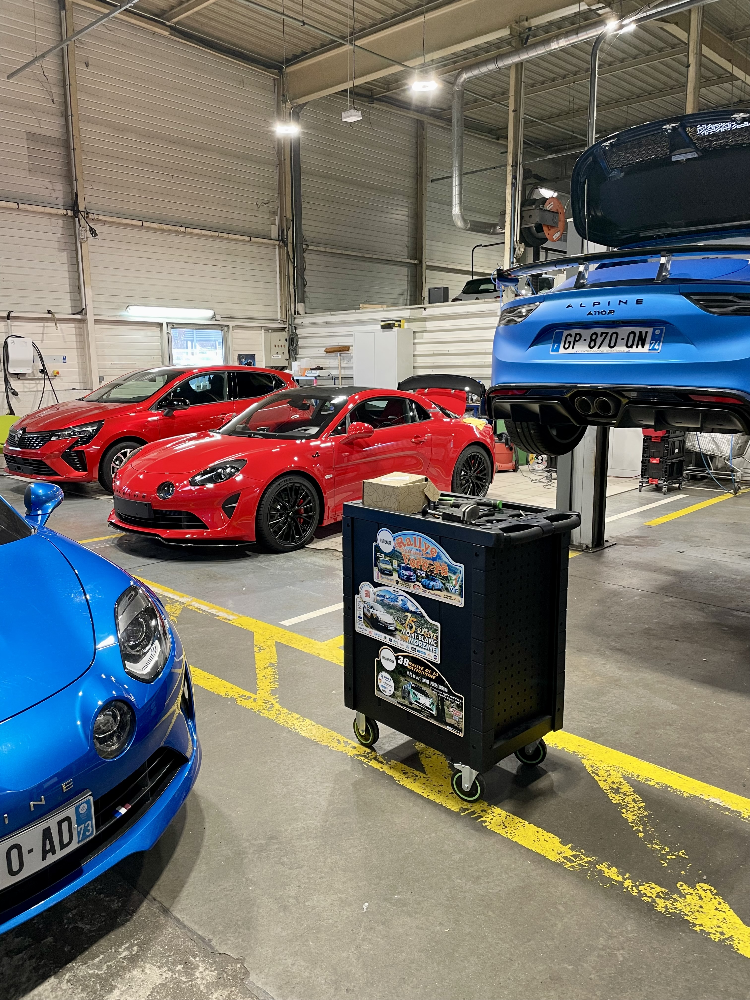
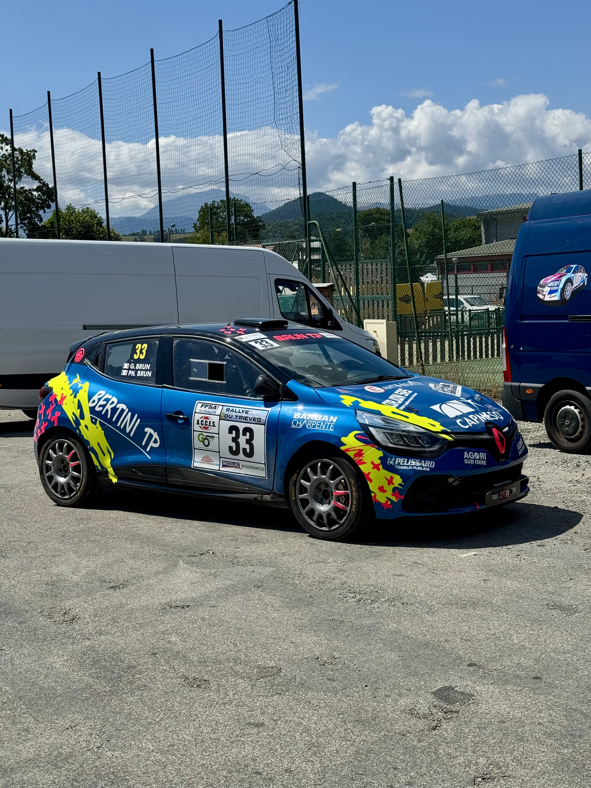
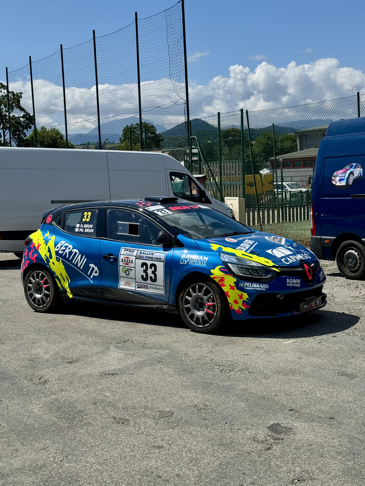

EXPÉRIENCE

ROSCAR GT CHALLENGE - 2B AUTO
Juillet 2023 - Février 2024Assistance technique et exploitation de véhicule de compétition.

CENTRE ALPINE GRENOBLE
Février 2024 - Janvier 2025Mécanique & Relation Client

TRINIANE RACING
Janvier 2025 - Aujourd'huiPréparation de véhicule de compétition

ASSISTANCE RALLYE
Depuis 2024Assistance, réglages et ajustements précis, réparation stratégique. Gestion logistique et coordination d'équipe
 

 
